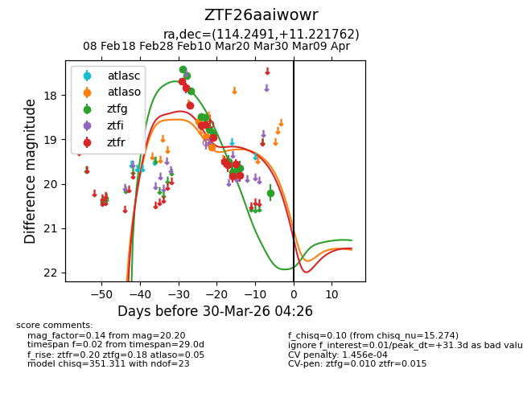
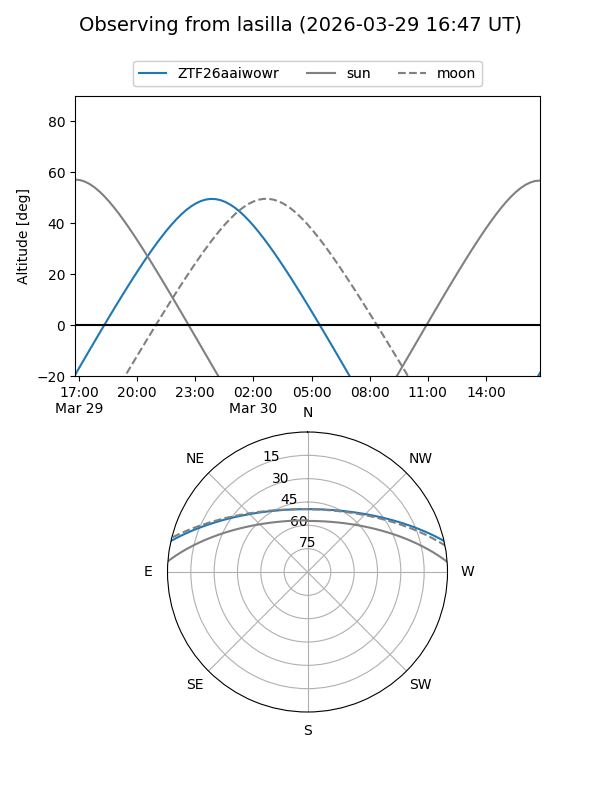
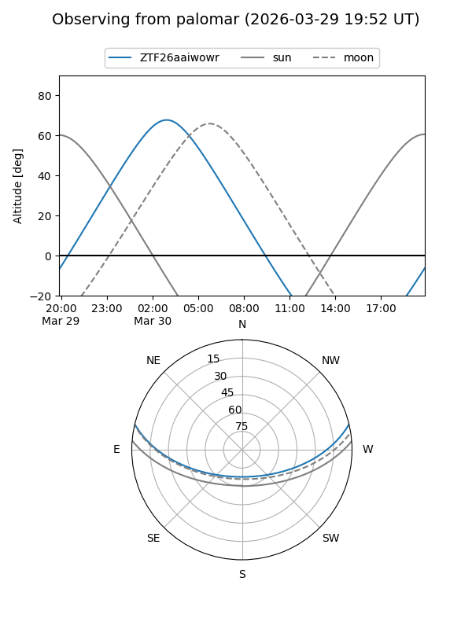
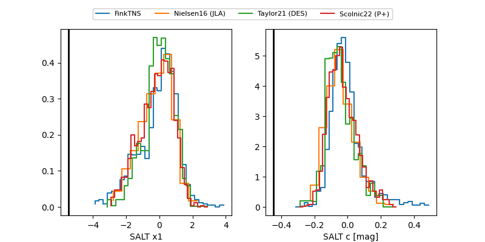

ZTF26aaiwowr
Target ZTF26aaiwowr at 2026-03-30 04:29
Aliases and brokers:
FINK: link
Lasair: link
ALeRCE: link
alt names
ZTF26aaiwowr (ztf,fink_ztf)
Coordinates:
equatorial (ra, dec) = 114.2491,+11.22176
equatorial (HMS+DMS) = 07:36:59.79,+11:13:18.34
galactic (l, b) = (207.8878,+15.13728)
Flags:
likely cv
Photometry:
last atlaso=19.17, ztfg=20.20, ztfr=19.80
3 atlaso, 12 ztfg, 11 ztfr detections
Lightcurve

Visibility


Additional plots
